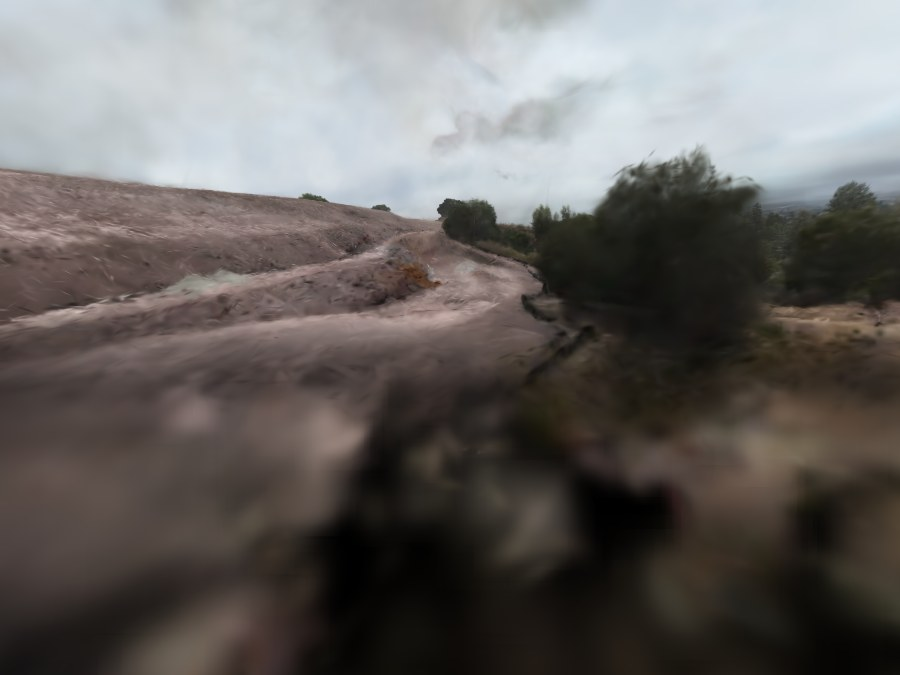
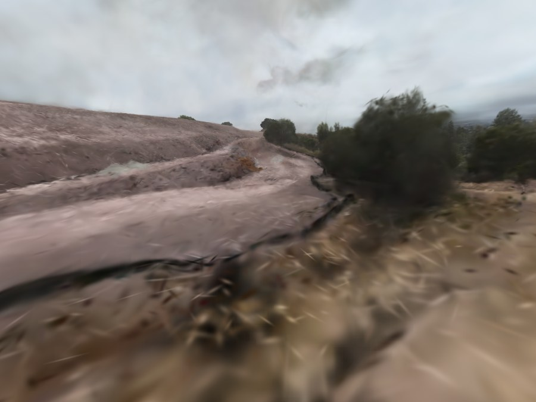

SStructure-from-motion PPoses LLevelling OOptimisation OOrientation GGaussians EExport
Two drone flights over two sites, six days apart, rebuilt as a single photorealistic 3D reconstruction — and then flown back through, in a browser, alongside the footage they came from.
of 7,471
3D points
error
shipped asset
in flight altitudes
I flew a DJI O4 Pro over two sites and built 3D Gaussian Splatting reconstructions from the raw footage, entirely on an Apple Silicon Mac with no CUDA. The pipeline runs video → gyro-driven frame selection → COLMAP structure-from-motion → Brush, a Rust/WebGPU 3DGS trainer → a WebGL viewer that replays the original flight paths through the reconstruction next to the source video. Along the way I implemented the 2DGS depth-distortion loss in Rust and CubeCL from the paper, merged two sessions six days apart into one coordinate frame, and spent most of the effort chasing a visual defect.
The defect — the ground looks see-through when flying low — turned out
to be const znear = 0.2 in the viewer. Four separate
reconstruction-side interventions had been built and measured against a symptom
that a one-line rendering bug was causing. The negative results are kept here
deliberately; disproving my own hypotheses took more work than the parts that
worked.
Capture, and which frames to keep
Consumer FPV footage is close to the worst input structure-from-motion can be given: fast motion, rolling shutter, a wide fisheye lens, and a camera bolted on pointing up, so the ground is only ever seen at a grazing angle.
Four constraints set the shape of everything that follows. None of them are choices I made; they are what the hardware and the footage are.
| Constraint | Consequence |
|---|---|
| No CUDA — Apple Silicon only, 48 GB unified | Rules out every mainstream 3DGS implementation. Brush, a Rust/WebGPU trainer, on the Metal backend. COLMAP runs CPU-only. |
| Consumer FPV footage, not a capture rig | No turntable, no controlled orbit, no even coverage. Camera pitched up 15–29°. |
| Two sessions, six days apart | Different light, different vegetation. Merging them meant proving cross-session matches existed before spending eighteen hours of mapper time. |
| A 4 GiB single-buffer limit on the GPU | A hard ceiling near 23.7 M splats at ~181 bytes each — unrelated to the 48 GB of system RAM, and found by crashing into it. |
| Everything runs locally | One training run is 5–28 hours. Experiment design is the bottleneck, not compute. |
Pull per-frame quaternions out of the DJI telemetry stream.
Keep a frame once the camera has turned far enough.
Decode the kept frames at 1920×1440.
Features, matching, incremental mapper, bundle adjustment.
Brush on Metal, 20k–60k iterations, 8M–22M splats.
Level, centre, scale, cap, and write a 32-byte-per-splat file.
Selection follows rotation, not the clock
Sampling every nth frame is the obvious approach and it is wrong for this
footage. A drone diving down a straight line barely changes what the camera sees;
a fast yaw changes it completely in a tenth of a second. So the selector keeps a
frame once the accumulated rotation since the last kept one crosses a threshold,
with a floor of kmin frames so it cannot pick neighbours, and a
ceiling of kmax so translation-dominated flight still gets sampled.
At the settings that shipped — 8°, kmin 2,
kmax 15 — the nine clips give 7,471 frames out of about
seventy thousand. Push the threshold up and the kept ticks bunch into the turns
and vanish on the straights; that is the failure the time cap exists to prevent.
One guard in the selector is there because of a silent failure. DJI sometimes writes the telemetry with an identity quaternion on every sample — two clips did this — and the extractor reports success either way. The angle between two identical quaternions is zero forever, so selection degrades quietly to the time cap and nothing tells you. It now counts distinct quaternions and refuses rather than pretending.
Structure from motion, and merging two sessions
Two sites, flown six days apart, reconstructed into one model. The failure mode worth worrying about was not a bad merge but a silent one: two disconnected components in the same file, which look fine until you fly between them.
Rung 0 is a registered frame — the same kind of render as the right half of Figure 1, at the height the drone flew. Every rung above it is the same splats seen from a camera that never existed, and the reconstruction holds up because the geometry was solved from thousands of overlapping views rather than from the one in front of you.
Proving the merge was possible before paying for it
A merged mapper run is eighteen hours. Rather than start it and find out, I ran the feature matching alone and counted verified two-view geometries between a hilltop frame and a cemetery frame. That is a few hours, and it answers the only question that matters.
The merged mapper then produced one model rather than two components, registering 7,470 of 7,471 frames.
| Quantity | Value |
|---|---|
| Source clips | 9 |
| Frames registered | 7,470 / 7,471 |
| Triangulated 3D points | 3,359,339 |
| Mean track length | 6.58 |
| Observations | 22.1 M |
| Mean reprojection error | 0.821 px |
| Mapper wall time | 1,076 min |
Two traps here cost real time. Brush writes a Vertical axis comment
into its PLY with Z negated, and a wrong up-vector puts every camera underground
while still looking entirely plausible in the viewer. Every scene's up direction
is now derived from ground geometry and validated by asserting the cameras sit
above the terrain: on the merged scene the correct sign puts 1% of
cameras below terrain and the wrong one puts 99%. Separately, the terrain fit
that check relies on fits one height field, so on a two-site scene it
interpolates across the empty ground between them and reports nonsense — 52% of
cameras underground, and a flattering 1.2% hole figure that nearly got believed.
Rendering, and replaying the flights
The viewer sorts several million splats back to front and alpha-blends them. There is no depth buffer anywhere in it. That single fact explains most of what follows, including the bug.
Splats are stored 32 bytes each — position, scale, an 8-bit colour and an 8-bit
quaternion — and drawn as one instanced quad apiece, with the 3D covariance
projected to a 2D ellipse per frame. Ordering comes from a 16-bit counting sort
by depth, re-run in a worker whenever the view rotates enough to matter. The
blend is ONE_MINUS_DST_ALPHA / ONE: front-to-back
“under” compositing, where destination alpha is accumulated coverage.
Flying the recorded trajectories back through the model
The differentiating feature is replay. The viewer reconstructs the transform the
exporter applied — recovered from the camera set by least squares, with a
maximum position residual of 3.03e-14 — and then flies the original
drone trajectories through the reconstruction as coloured ghosts, with the source
video playing in a corner at the same pose.
Two things about it were not obvious. Time has to come from the frame index in the filename, not the pose order. Selection was adaptive, so poses are dense in the turns and sparse on the straights; playing them at a fixed rate per pose makes the drone crawl through corners and teleport down straights. Playing them on real time is what makes a replay a replay.
And the blend operator forbids the obvious draw order. Drawing
the drone models first and the splats over them does not work: anything already
in the buffer at alpha 1 makes every subsequent splat multiply by
(1 − 1) and the entire scene disappears. The fix is a
depth prepass — the ghosts stake out the depth buffer with colour writes masked
off, the splats are then drawn with depth testing on and depth writes off, and
the ghosts are drawn again in colour underneath. The second pass gets correct
occlusion for free from the blend operator itself.
The ground was see-through
Flying low in the viewer, the bottom third of the frame showed the background through the ground. It made the whole reconstruction feel broken regardless of what the metrics said, and it is the spine of this project.


znear 0.2 — shipped znear 0.010053_001085), same everything — only the near plane changed.
Bottom-third holes go from 51.2% to 4.4% and accumulated
opacity from 0.520 to 0.897. Black is not black ground; it is nothing
reaching the pixel at all.
Four reconstruction-side hypotheses, all built, all measured
Before any of that, I was sure this was a reconstruction problem, and I had measurements that said so. The ground is a slab rather than a surface: 47–49% of its opacity mass sits below the visible surface, the 10→90% opacity transition spans 131–156% of median flight altitude, ground splat opacity has a median of 0.26 with 83% under 0.5, and the thin axis of a ground splat sits a median of 47° off the surface normal. All of that is true. None of it is what made the ground see-through.
- A flatness prior at refine time. Shrink each splat toward a disc. Made it worse — holes 33.5% → 38.9%. Flattening after export was worse still, 35.9% → 61.3%.
- A depth-distortion loss. Written from the 2DGS paper in Rust and CubeCL. §6. A measured negative.
- A screen-space covariance dilation. Null at 3.3× the value the trainer actually uses.
- A post-hoc opacity boost. Worked, and was a workaround. Removed once the real cause was found.
The flatness prior has the most useful post-mortem, and it is one line of arithmetic. A ground splat's thin axis is about 1.0% of flight altitude; the slab it sits in is about 125%. The slab is roughly 129 times thicker than a single splat. Whatever is wrong, it is a fact about where splat centres are, not about splat shape — so every intervention that only rescales axes is aimed at the wrong quantity. That check would have ruled out a whole class of fix before any of it was built.
The actual cause
const znear = 0.2; — one line in viewer/main.js.
Splats are frustum-culled on their centre depth. The reject test
is pz < −margin·z, which for this projection matrix reduces to a
pure near-depth cut:
zfar 200 and margin 1.2 that puts the cut at z < 0.0910 for znear 0.2 and z < 0.0045 for znear 0.01. The shipped cull was never at 0.2 — the margin divides it by about 2.2 — but 0.091 is still well inside the flight envelope.
Median flight altitude in normalised viewer units on these scenes runs 0.24 to
0.47. A cut at 0.091 sits inside that, and everything within it is dropped before
it is drawn — including, when the camera is low, the ground directly beneath it.
Since the viewer has no depth buffer, znear was buying nothing and
cost nothing to shrink.
Try it
Below is a real splat renderer, not a video — the same format, the same sort, the same shaders, running on a 208,000-splat crop of the deployed asset taken around one low capture pose. The view presets are real COLMAP poses and Fly the recorded path follows an eighteen-second segment of the actual flight. Drag the near-plane control and the ground goes away underneath you.
Why it hid for so long
I tested znear early and wrote it off. The note in the log reads:
“lowering znear to 0.01 moved bottom-third opacity by <0.03.” That was a
cohort mean.
Every tool I had built reported a middle. The measurement script reports a cohort mean; the slab profiler aggregates over three hundred ground columns; the detail metric averages forty frames. The defect lived in the tail, and averaging over a cohort that is mostly fine dilutes a thirty-six-point effect into nothing. Somebody actually flying the viewer sees it instantly, because they fly through the bad poses instead of averaging over them.
Two other measurements pointed straight at the answer and were misread at the time:
- corr(alpha, splats per pixel) = +0.94, but corr(alpha, splats within 0.3 of the camera) = −0.46. More geometry near the camera, less alpha on screen. Geometry present and not being rendered is only explicable by culling, and that sign flip was on the page before the near plane was ever swept.
- corr(alpha, altitude) = +0.35. Lower flight, worse holes. That is the signature of a fixed near plane. A diffuse slab does not care how high you are.
One more thing only became clear afterwards, and it is the part I found hardest to accept: severity was set by the scene's normalisation, not by the flying. The exporter scales every scene so the camera p90 radius lands at 3.0, which gave the cemetery a median altitude of 0.24 and the hilltop 0.47. Same drone, same day, same pilot — one scene hit twice as hard as the other purely because of a normalisation constant. No amount of looking at the reconstruction would have found that.
A depth-distortion loss, written in Rust
Brush ships without a surface regulariser, and 3DGS has no prior that makes a surface thin. From a grazing view, a thick semi-transparent slab and a thin opaque surface produce an identical image and therefore an identical loss.
So I implemented the depth-distortion term from the 2DGS paper: for each ray, penalise the spread of that ray's own contribution along its depth.
w = α·T the blend weight and t the depth.Aᵢ = Σ_{j<i} wⱼ and Bᵢ = Σ_{j<i} wⱼ tⱼ. The rasteriser already traverses in depth order, so both prefix sums are free.The backward pass is where it gets interesting
The gradient needs a suffix sum as well as a prefix sum, and the
backward rasteriser walks front to back with no second pass available. Euler's
theorem supplies it for nothing. L is homogeneous of degree 2 in
w, so
R_{k+1} = R_k − w_k g_k. No second pass, no extra storage per splat.ΣW and ΣWt into two spare output channels, so the backward reconstructs what is behind splat k without ever seeing it.
Alpha also reaches the loss by two routes — directly through
wᵢ = αᵢ·Tᵢ, and indirectly because every Tⱼ for
j > i carries a (1 − αᵢ) factor — and both have to
be accumulated or the gradient is quietly wrong rather than loudly broken.
Two traps, both of which would have failed silently. The gradient
buffer stride was widened from 10 to 11 unconditionally rather than only
when the loss is enabled — a stride that differs between two kernels is silent
corruption, not a crash. And the projection backward had an early-out
if !any_grad { return } that would have dropped depth-only gradients
without a word. Verified with finite differences, including a guard asserting the
gradient is non-zero, because a finite-difference test passes trivially
when both sides are zero.
And it did not help
At weight 0.05 unnormalised, the loss collapsed the scene's depth range — splat
radius p99 fell 17.45 → 7.78 and PSNR dropped 22.14 → 19.80 dB. The term is
degree-1 in t and unbounded, so rays through distant geometry have
larger absolute depth spread and dominate the gradient. With per-ray
normalisation it stopped collapsing and still degraded detail, 22.6% → 16.9%.
The implementation is correct and the intervention does not help this scene. It is also, in hindsight, aimed at a defect that was mostly the viewer.
Near-field blur — a real defect, badly measured
With the transparency fixed, a second defect remained and it is genuine: the near-field ground is blurry. Different failure mode, different cause, and the obvious metric conflates it with something else entirely.
The sharpness metric divides render high-frequency energy by ground-truth high-frequency energy, per region. The bottom third scored 18% and the top half 40%, which reads as a catastrophic near-field defect. But the bottom third's ground truth carries 2.44× the high-frequency energy — close grass against sky and distant hills. The two regions were never comparable. Grass at two metres largely is not multi-view consistent: blades self-occlude and change with parallax, and no number of splats can reconstruct that.
Binning 8×8 blocks by their own local ground-truth texture and comparing near against far at matched difficulty separates the two.
A controlled ablation
Five training runs on the cemetery scene, all 20,000 iterations, all sharing one learning-rate schedule so they rank fairly against each other.
Three things that ablation changed my mind about
Saturation proves a cap binds. It says nothing about whether relieving it helps. Every run ever done exported exactly 8,000,000 splats, and had done since iteration 10,000. That looked like overwhelming evidence the cap was the constraint. Given a 16 M budget the optimiser took 8.67 M by the same iteration. The real gap was 8.0 against 8.67, not 8 against 16.
The flag that turned out to be the lever had never fired.
--split-at-screen-size defaults to 0.5, but the actual distribution
has a p99 of 0.103 and only 0.01% of splats above 0.5 — five times past p99.9.
Nothing was ever force-split. Worse, its splits are funded from
max_splats − current, which had been zero since iteration 10,000, so
lowering the threshold on its own would also have done nothing. The two flags only
work together, which is why neither showed anything alone.
Resolution is not the lever, and the metric lies about it by default. Training at native 2688 scored 20.2% once brought down to a common yardstick — a dead tie with 20.3% at 1920 — and 16.1% against its own 2688 ground truth. It failed proportionally at a harder target rather than resolving more detail. The metric originally credited it 19.7%, because it picked the first ground-truth directory alphabetically and upscaled a 1920 reference to meet a 2688 render, scoring against a reference carrying no detail above 1920's Nyquist. When comparing runs at different resolutions, bring them to one yardstick first.
The final run, and the mistake that undid it
The winning configuration went to a 60,000-iteration run on the merged scene: 28 hours, 16 M splats, all 7,470 cameras. Texture improved exactly as predicted. It also looked visibly worse.
Bottom-third detail went 14.8% → 16.6% and the top half 34.7% → 35.6%. Near-field detail improved in every texture band and the near/far ratio rose in five of six. And the ground was see-through again.
The cause was the export step, not the training. The exporter keeps the top
N splats by opacity × projected area. The old run kept 3 M of 8 M —
37.5%. The new one kept 3 M of 16 M — 18.8%. Doubling the trained splat count
while holding the export cap fixed throws away four fifths instead of two thirds,
and --split-at-screen-size had made each survivor smaller. Both
effects cut coverage.
This is the same metric mistake twice in one project. The sharpness metric measures texture; the hole metric measures whether a ray accumulates alpha. They are different failure modes and they can move in opposite directions. A 28-hour run was gated on the first without re-checking the second — the exact confusion that earlier made a blur defect look like a transparency defect. The build that ships is still the 8M / 30k one.
Everything that did not work
Kept because the disproofs took more effort than the successes, and because a negative result you cannot trust is worse than no result at all.
| Intervention | Measured outcome |
|---|
Engineering notes worth keeping
- LPIPS was broken, then unaffordable, then harmful. It panicked four seconds into training: the Burn fork carries autodiff-ness at runtime in an enum rather than in the type, so weights loaded from a record are plain float variants and the first op mixing them with autodiff activations calls
.autodiff()on a plain tensor. Fixed by lifting each parameter throughTensor::from_inner. Then it ran, at 29 s/iter against roughly 0.5 for the entire rest of the step — a 20k run would have taken months. Adding a random 256 px crop made it affordable, and then it turned out to hurt quality anyway. - A 4 GiB single-buffer ceiling, not a RAM ceiling. A 24 M-splat run died with
failed to reserve 4336857088 bytes. That is just past 4 GiB; at ~181 bytes per splat the hard ceiling is about 23.7 M splats, on a machine with 48 GB of RAM. - A waiter that lied.
until pgrep -f 'a\|b'exits immediately and prints its success message, becausepgrep -ftakes an extended regex where alternation is a bare pipe. It reported that all scans were done while three renders were still running. A clean exit is not evidence. - Editing a running bash script. Bash reads scripts incrementally by file offset, so an edit mid-run can resume at the wrong offset. Every chain script here was killed by PID, edited, checked with
bash -n, and relaunched — never edited in place. - A scoring bug that read as a result. The comparison script had hardcoded ground-truth paths, so on any newer frame set it reported
images: 0— which looks like a finding rather than an error.
Limitations
- Near-field blur is unfixed. Bottom-third detail retention is 14.8% on the shipped merged build against 34.7% for the far field, and the ablation moved it two points. The cause is a scale problem, not a capacity one, and I do not have a fix.
- Residual holes survive at a few poses. The worst 1.5 M cemetery pose is still 26% after the near-plane fix, so there is genuine missing near-field geometry underneath the rendering bug.
- Two sites, one day each, one drone. Nothing here has been shown to generalise to another camera, another lens, or a scene with different geometry. The floater filter that works on open terrain deletes real ground on a dense city scene, and vice versa.
- The ground is still a slab. 47–49% of its opacity mass sits below the visible surface. That measurement stands; it simply was not the cause of the symptom it was used to explain.
- The interactive above is a crop. 208,000 splats of 3,000,000, chosen around one pose, with the sky culled. The full asset is 96 MB and does not belong on a portfolio page.
What I would take from it
- A cohort mean can hide a catastrophic defect in the tail. The bug that drove the entire project was measured early, averaged away, and written off in one line.
- Two metrics that both sound like “quality” can move in opposite directions. Texture and coverage are different failure modes; optimising one silently wrecked the other, twice.
- Saturation is not causation. Every run pinning exactly at the splat cap looked like overwhelming evidence the cap was binding. Lifting it changed almost nothing.
- Do the cheap ruling-out arithmetic first. The slab was 129× thicker than a single splat — one line that invalidates an entire category of fix before any of it is built.
- Negative results need the same rigour as positive ones, or you cannot trust them when they contradict your next idea.
Tools
COLMAP 4.1.1 on CPU; Brush (Rust / WebGPU / Metal) with Burn and CubeCL; Python, NumPy, OpenCV and Pillow for analysis — including a from-scratch CPU splat rasteriser that reproduces the viewer's projection, covariance, half-float packing and blend arithmetic exactly, so rendering hypotheses could be tested without a GPU and so Figure 1 could be rendered at all; WebGL2 for the viewer, extended from the antimatter15 splat viewer; ffmpeg, and bash orchestration with GPU-serialised job queues.